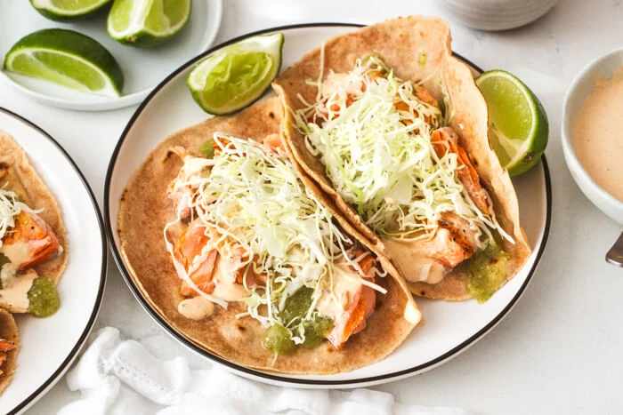

Salmon tacos

Description
These salmon tacos will be the star of Taco Tuesday!
Grilled salmon is topped with salsa verde and chipotle sauce
for the best flavor-packed tacos. Best of all, this dinner
can be made in under 30 minutes!
Ingredients
For the grilled salmon
- 4 (6-ounce) salmon fillets
- 2 tablespoons extra virgin olive oil
- kosher salt and freshly ground black pepper, to taste
To assemble the tacos
- 8 tortillas
- ½ cup salsa verde
- ½ cup chipotle sauce
- 2 cups shredded cabbage
- lime wedges for garnish
Steps
- Grill the salmon. Heat an outdoor grill or indoor grill pan
over medium-high heat. Drizzle the oil over the salmon,
making sure the salmon is fully coated on both sides.
Season the top side of the salmon with salt and pepper,
then grill for 5 to 6 minutes per side, until cooked through.
- Flake the salmon. Flake the salmon from each fillet into two tortillas.
- Assemble the salmon tacos.
Drizzle the flaked salmon with salsa verde and chipotle sauce.
Top with shredded cabbage, and if you'd like, squeeze fresh lime
juice on top before serving.
To the top
To the main menu